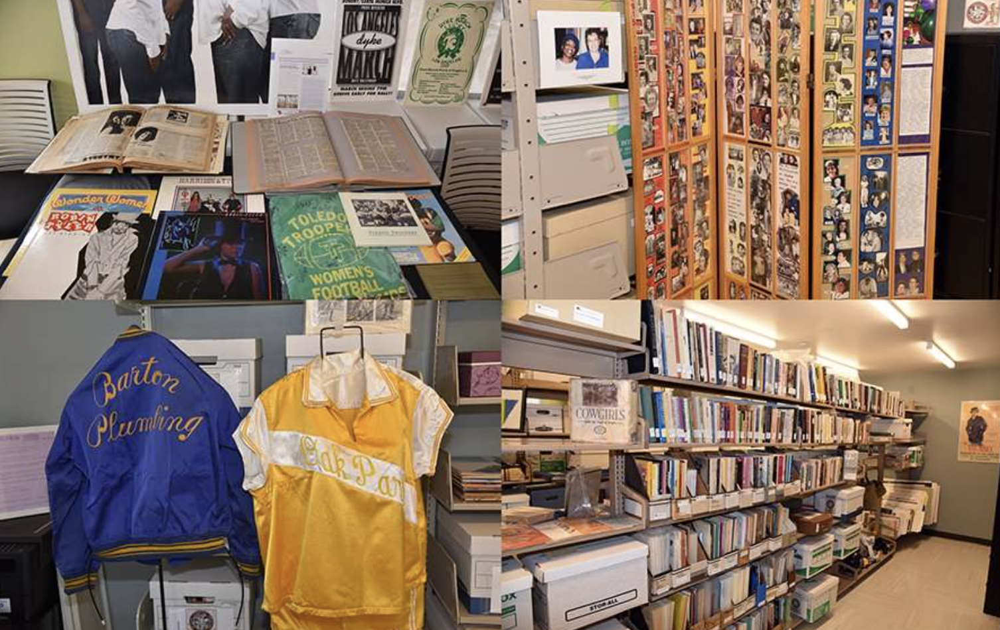
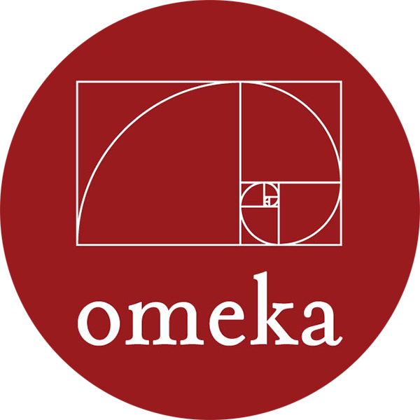

At the June L Mazer Lesbian Archives, I am working on building the Digital Asset Management system's interface using Omeka and Reclaim Hosting, as well as the content by creating and standardizing metadata for digital collections. I scan and process physical materials including ephemera, printed materials, and visual art, categorizing and uploading them to the digital repository. My work ensures long-term accessibility and discoverability while handling sensitive archival materials ethically.
 